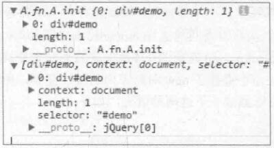
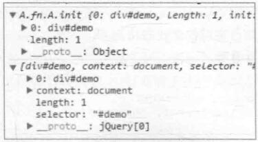
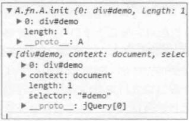
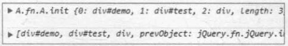
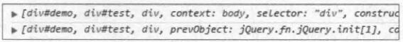

通过在对象方法中将当前对象返回，实现对同一个对象多个方法的链式调用。
var A = function () {
return A.fn();
};
A.fn = A.prototype = {};
var A = function (selector) {
return A.fn.init(selector);
};
A.fn = A.prototype = {
init: function (selector) {
return document.getElementById(selector);
},
length: 2,
size: function () {
return this.length;
},
};
console.log(A("demo"));
现在，我还想让 A 对象返回的结果还能够拥有 A.fn 中的方法，如 size 等，现在的设计是办不到的，
var A = function (selector) {
return A.fn.init(selector);
};
A.fn = A.prototype = {
init: function (selector) {
// this === A.fn
// 作为当前对象的属性值保存
this[0] = document.getElementById(selector);
this.length = 1; // 矫正 length
return this;
},
length: 2,
size: function () {
return this.length;
},
};
// 使用
var demo = A("demo");
console.log(demo);
console.log(A("demo").size()); // 1
奇怪现象：后获取的 test 元素将先获取的 demo 元素覆盖了
var test = A("test");
console.log(test);
要解决这个问题，直接使用 new 关键字复制创建即可，不过此时调用 size 方法就会报错。
var A = function (selector) {
return new A.fn.init(selector);
};
console.log(A("demo"));
console.log(A("test"));
console.log(A("demo").size()); // TypeError
上面的问题是由于 this 指向的改变造成的，加了 new 之后，this 指向 A.fn.A.init 函数。
A.fn.A.init 如何得到的？
如何表示 new A.fn.init(selector) 的构造函数呢？可以有以下两种方式：01 A.fn.init 或 02 A.init，将 A.init 带入到 A.fn.init 中的 init，可以得到 A.fn.A.init。
console.log(A("demo"));
console.log($("#demo"));
发现他们的原型有些不同：

第一个 __proto__ 为 A.fn.A.init
第二个 __proto__ 为 jQuery[0]
解决这个问题的方式很简单也很巧妙，只要将构造函数的原型指向一个已存在的对象即可。
A.fn.init.prototype = A.fn;

果然是 Object 了，不过 jQuery 中确实是 jQuery 啊？？
这是因为实例化的对象是在构造函数执行时创建的，所以 constructor 指向的就是 A.fn.A.init 构造函数，但是这个对象在执行完毕之后就 ‘不存在’ 了，所以我们为了加强 constructor，想像 jQuery 一样，为了让 __proto__ 指向 A 对象，可以这么做：
var A = function (selector) {
return new A.fn.init(selector);
};
A.fn = A.prototype = {
// 强化构造器
constructor: A,
init: function (selector) {
console.log(this.constructor);
/*
输出结果：
function (selector) {
return new A.fn.init(selector);
}
*/
},
//...
};
A.fn.init.prototype = A.fn;

此时，我们 A 框架的 __proto__ 为 A 了，并且 size 方法也可以正常使用了
console.log(A("demo").size());
var A = function (selector) {
return new A.fn.init(selector);
};
A.fn = A.prototype = {
// 强化构造器
constructor: A,
init: function (selector, context) {
// 获取元素的长度
this.lenth = 0;
// 默认获取元素的上下文为 document
context = context || document;
// 如果是 id 的选择符，按位非将 -1 转化为 0，~-1 === 0
if (~selector.indexOf("#")) {
// 截取 id 并选择
this[0] = document.getElementById(selector.slice(1));
this.length = 1;
} else {
// 如果是元素名称
var doms = context.getElementsByTagName(selector),
i = 0,
len = doms.length;
for (; i < len; i++) {
this[i] = doms[i];
}
// 校正长度
this.length = len;
}
// 保存上下文
this.context = context;
// 保存选择符
this.selector = selector;
// 返回对象
return this;
},
//...
};
A.fn.init.prototype = A.fn;
测试的时候发现控制台：jQuery 获取的元素更像一个数组，而 A 框架返回的更像是一个对象。

由于 js 是弱类型的语言，并且数组、对象、函数都被看成是对象的实例，所以 js 中并没有一个纯粹的数组类型。而且 js 引擎的视线也没有做严格的校验，也是基于对象实现的。一些浏览器解析引擎在判断对象是否是数组的时候不仅仅判断其有没有 length 属性，可否通过 ‘[索引值]’ 方式访问元素，还会判断其是否具有数组方法来确定是否要用数组的形式展现，所以我们只需要在 A.fn 中添加几个数组常用的方法来增强数组特性就可以解决问题了。
A.fn = A.prototype = {
//...
// 增强数组
push: [].push,
sort: [].sort,
splice: [].splice,
};
测试结果：

// 对象拓展
A.extend = A.fn.extend = function () {
var i = 1,
len = arguments.length,
target = arguments[0],
j;
// 如果只传一个参数
if (i === len) {
// 源对象为当前对象
target = this;
// i 从 0 开始计数
i--;
}
// 遍历参数中的拓展对象
for (; i < len; i++) {
for (j in arguments[i]) {
target[j] = arguments[i][j];
}
}
// 返回源对象
return target;
};
// 拓展一个对象
var demo = A.extend(
{
first: 1,
},
{
second: 2,
},
{
third: 3,
}
);
console.log(demo); // { first: 1, second: 2, third: 3 }
// 拓展 A.fn 方式一
A.extend(A.fn, { version: "1.0" });
console.log(A("demo").version); // 1.0
// 拓展 A.fn 方式二
A.fn.extend({
getVersion: function () {
return this.version;
},
});
console.log(A("demo").getVersion()); // 1.0
// 拓展 A 方式一
A.extend(A, {
author: "yinhao",
});
console.log(A.author); // yinhao
// 拓展 A 方式二
A.extend({
nickname: "雨夜清河",
});
console.log(A.nickname); // 雨夜清河
A.fn.extend({
// 添加事件
on: (function () {
if (document.addEventListener) {
return function (type, fn) {
var i = this.length - 1;
for (; i >= 0; i--) {
this[i].addEventListener(type, fn, false);
}
return this;
};
} else if (document.attchEvent) {
return function (type, fn) {
var i = this.length - 1;
for (; i >= 0; i--) {
this[i].addEvent("on" + type, fn);
}
return this;
};
} else {
return function (type, fn) {
var i = this.length - 1;
for (; i >= 0; i--) {
this[i]["on" + type] = fn;
}
return this;
};
}
})(),
});
A.extend({
// 将 ‘-’ 分割线转化为驼峰式，如 border-color => borderColor
camelCase: function (str) {
return str.replace(/\-(\w)/g, function (all, letter) {
return letter.toUpperCase();
});
},
});
A.extend({
// 设置 css 样式
css: function () {
var arg = arguments,
len = arg.length;
if (this.length < 1) {
return this;
}
// 只有一个参数时
if (len === 1) {
// 如果是字符串则为获取第一个元素的 css 样式
if (typeof arg[0] === "string") {
// IE
if (this[0].currentStyle) {
return this[0].currentStyle[name];
} else {
return getComputedStyle(this[0], false)[name];
}
} else if (typeof arg[0] === "object") {
// 为对象时则设置多个样式
for (var i in arg[0]) {
for (var j = this.length - 1; j >= 0; j--) {
this[j].style[A.camelCase(i)] = arg[0][i];
}
}
}
} else if (len === 2) {
// 两个参数则设置一个样式
for (var j = this.length - 1; j >= 0; j--) {
this[j].style[A.camelCase(0)] = arg[i];
}
}
return this;
},
});
// 设置属性
A.fn.extend({
attr: function () {
var arg = arguments,
len = arg.length;
if (this.length < 1) {
return this;
}
// 如果一个参数
if (len === 1) {
// 为字符串则获取第一个元素属性
if (typeof arg[0] === "string") {
return this[0].getAttribute(arg[0]);
} else if (typeof arg[0] === "object") {
for (var i in arg[0]) {
for (var j = this.length - 1; j >= 0; j--) {
this[j].setAttribute(i, arg[0][i]);
}
}
}
} else if (len === 2) {
for (var j = this.length - 1; j >= 0; j--) {
this[j].setAttribute(arg[0], arg[1]);
}
}
return this;
},
});
A.fn.extend({
html: function () {
var arg = arguments,
len = arg.length;
// 无参数则获取第一个元素的内容
if (len === 0) {
return this[0] && this[0].innerHTML;
} else {
// 一个参数则设置每一个元素的内容
for (var i = this.length - 1; i >= 0; i--) {
this[i].innerHTML = arg[0];
}
}
return this;
},
});
A("div")
.css({
height: "30px",
border: "1px solid red",
"background-color": "red",
})
.attr("class", "demo")
.html("add demo text")
.on("click", function () {
console.log("clicked");
});